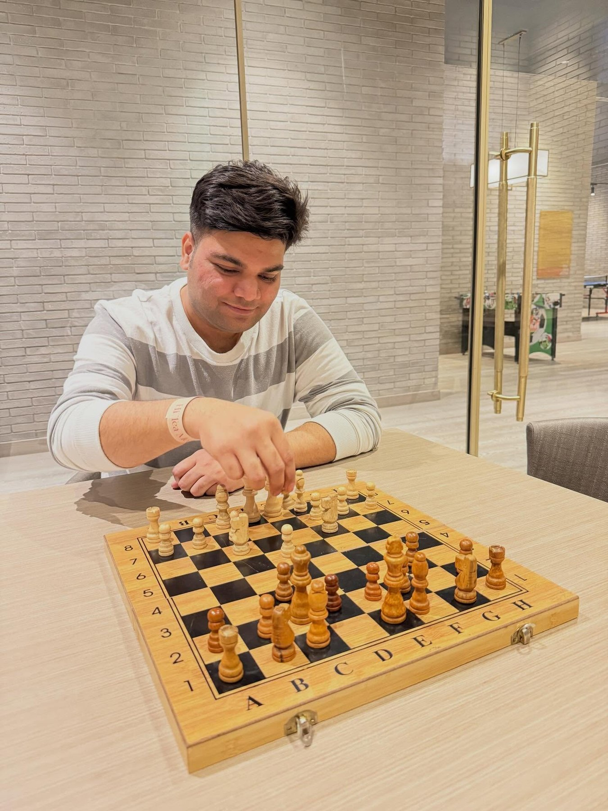

Family & Roots
Close-knit, grounded and well established.
I come from an upper-middle-class family with strong roots in Bihar
and a deep emphasis on education, responsibility and mutual support.
Ashok Kumar Gupta — Father
B.Tech (Civil)
Real Estate Developer
Office: Stock Point, Lalu Rabri Mor, Patna Bypass
Anita Gupta — Mother
M.Sc. (Botany)
Police Officer · Government of Bihar

Atal Ayush (Mohak Gupta)
History Honours · Satyawati College, DU
LL.B. · Campus Law Centre, DU
Advocate · Supreme Court of India
Civil Services & Judiciary Aspirant
My elder brother has always been one of my strongest sources of
support — generous by nature and someone I deeply respect.
Chacha's FamilySubhash Prasad Gupta, I.F.S. · Dr.
Ruchi Gupta , Satakshi Gupta ( Runjhun ), Subhansh Gupta ( Ritwik
)
Family Background
Subhash Prasad Gupta, I.F.S.Uncle · Ambassador of the Republic of Suriname
Dr. Ruchi GuptaAunt
Late Surendra Prasad GuptaPaternal Grandfather · Zamindar · Dostiya, Sheohar
Ramendra Kr. GuptaMaternal Grandfather · Former Mahamantri, Bihar Rajya Arya
Pratinidhi Sabha · Danapur, Patna
02
Life Beyond Work
LadakhFamily · roads · mountains · Pangong
A family trip filled with bike rides, camel rides, Pangong Lake and
nights under a sky full of stars — a journey remembered as much for
the time together as for the landscape.
Pangong LakeOne of the highlights of the trip.
Bike RidesExploring the terrain at its own pace.
Camel RideNubra Valley.
Under the StarsQuiet evenings that stayed with me.
03
Travel & Experiences
VietnamFamily · Ha Long Bay · kayaking · coast
From cruising through Ha Long Bay to kayaking and exploring a
completely different culture together, Vietnam was another family trip
full of new experiences.
More JourneysGangtok · Kerala · discovering new places
FoodNew cuisines, local flavours and street food.
DrivingSlow drives, classic Bollywood and empty highways.
MoviesSuspense and thrillers first; comedy and romance too.
New ExperiencesTrying activities I have never done before.
04
What Matters to Me
A few things I believe in.
Family
To me, being family-oriented means showing up for the people who
matter, valuing those relationships and making time for them. I
also believe marriage means creating a family in which one's
partner becomes an equally important part of that circle.
People
I believe in standing up for people when I feel something is right
— even when they are not part of my immediate team or there is no
personal benefit involved. For me, fairness and ethics matter more
when they are inconvenient than when they are easy.
Values I hold close
HonestyCommunicationKindnessEthicsFamily Values
Do good without keeping score.
Not everyone will remember what you did for them — and that is
alright. I believe genuine goodwill has a way of finding its way
back to you when it matters.
The person behind the profile
Serious when the situation demands it, light-hearted with the
people I am close to, occasionally moody, always learning — and
happiest when life has a little room for family, good food, a
memorable movie, rain, travel and an open road.
RainEspecially stepping out and enjoying it.
MoviesA good suspense thriller is hard to beat.
Night DrivesEmpty roads and classic Bollywood.
FoodNew cuisines and street food.
Addresses
DelhiFlat No. 902, Tower 1 & 2,
Amaryllis
Society,
Karol Bagh, Delhi
Patna202, Apna Awas Apartment,
Ashiana Digha
Road,
Patna, Bihar
MuzaffarpurMohak Complex,
Bariya Bus
Stand,
Muzaffarpur, Bihar
05